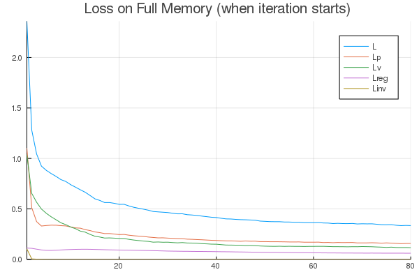
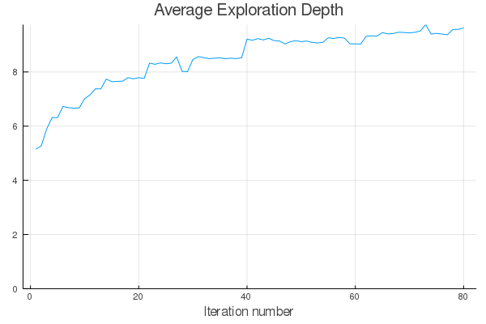
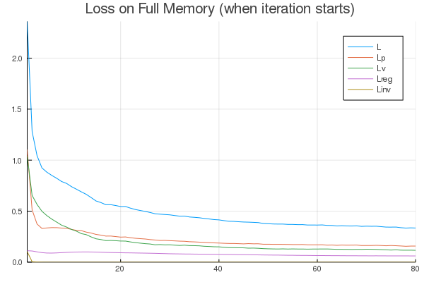
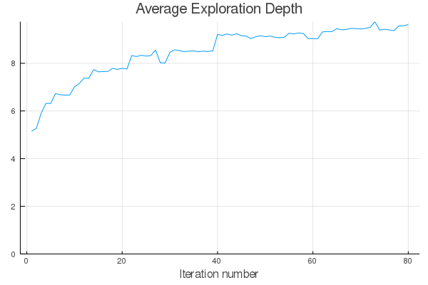
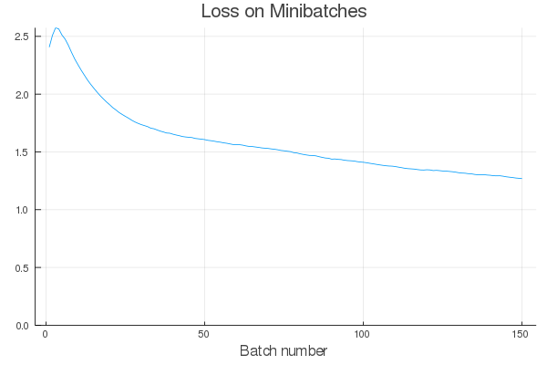
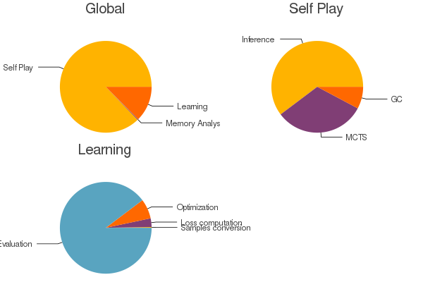

Learning to Play Connect Four
In this section, we discuss how to use AlphaZero.jl to train a Connect Four agent without any form of supervision or prior knowledge. Although the game has been solved exactly with Alpha-beta pruning using domain-specific heuristics and optimizations, it is still a great challenge for reinforcement learning.[1]
Training an agent on your machine
To run the experiments in this tutorial, we recommend having a CUDA compatible GPU with 4GB of memory or more. A 2GB GPU should work fine but you may have to reduce batch size. Each training iteration took about one hour and a half on a standard desktop computer with an Intel Core i5 9600K processor and an 8GB Nvidia RTX 2070 GPU.
To get optimal performances, it is also recommended to use AlphaZero.jl with Julia 1.5 (nightly), which includes a critical feature that enables CuArrays to force incremental GC collections.
To download AlphaZero.jl and start a new training session, just run the following:
git clone https://github.com/jonathan-laurent/AlphaZero.jl.git
cd AlphaZero.jl
julia --project -e "import Pkg; Pkg.instantiate()"
julia --project --color=yes scripts/alphazero.jl --game connect-four trainInstead of using scripts/alphazero.jl, one can also run the following into the Julia REPL:
ENV["CUARRAYS_MEMORY_POOL"] = "split"
using AlphaZero
include("games/connect-four/main.jl")
using .ConnectFour: Game, Training
const SESSION_DIR = "sessions/connect-four"
session = AlphaZero.Session(
Game,
Training.Network{ConnectFour.Game},
Training.params,
Training.netparams,
benchmark=Training.benchmark,
dir=SESSION_DIR)
resume!(session)The first line configures CuArrays to use a splitting memory pool, which performs better than the default binned pool on AlphaZero's workload as it does not require to run the garbage collector as frequently. Then, a new AlphaZero session is created with the following arguments:
| Argument | Description |
|---|---|
Game | Game type, which implements the game interface. |
Training.Network | Network type, which implements the network interface. |
Training.params | AlphaZero parameters. |
Training.netparams | Network hyperparameters. |
Training.benchmark | Benchmark that is run between training iterations. |
SESSION_DIR | Directory in which all session files are saved. |
The ConnectFour.Training module contains some default parameters and benchmarks for the Connect Four game. Its content can be examined in file games/connect-four/params.jl. We include it below for reference but each part will be discussed specifically in the rest of this tutorial.
Full training configuration
Network = ResNet
netparams = ResNetHP(
num_filters=64,
num_blocks=7,
conv_kernel_size=(3, 3),
num_policy_head_filters=32,
num_value_head_filters=32,
batch_norm_momentum=0.1)
self_play = SelfPlayParams(
num_games=4_000,
reset_mcts_every=100,
mcts=MctsParams(
use_gpu=true,
num_workers=64,
num_iters_per_turn=600,
cpuct=2.0,
temperature=StepSchedule(
start=1.0,
change_at=[10],
values=[0.5]),
dirichlet_noise_ϵ=0.25,
dirichlet_noise_α=1.0))
arena = ArenaParams(
num_games=200,
reset_mcts_every=nothing,
flip_probability=0.5,
update_threshold=0.1,
mcts=MctsParams(
self_play.mcts,
temperature=StepSchedule(0.1),
dirichlet_noise_ϵ=0.05))
learning = LearningParams(
use_position_averaging=true,
samples_weighing_policy=LOG_WEIGHT,
batch_size=2048,
loss_computation_batch_size=2048,
optimiser=Adam(lr=1e-3),
l2_regularization=1e-4,
nonvalidity_penalty=1.,
min_checkpoints_per_epoch=1,
max_batches_per_checkpoint=1000,
num_checkpoints=2)
params = Params(
arena=arena,
self_play=self_play,
learning=learning,
num_iters=80,
ternary_rewards=true,
use_symmetries=true,
memory_analysis=MemAnalysisParams(
num_game_stages=4),
mem_buffer_size=PLSchedule(
[ 0, 60],
[400_000, 2_000_000]))
baselines = [
Benchmark.MctsRollouts(
MctsParams(
arena.mcts,
num_iters_per_turn=1000,
cpuct=1.)),
Benchmark.MinMaxTS(depth=5, τ=0.2)]
make_duel(baseline) =
Benchmark.Duel(
Benchmark.Full(arena.mcts),
baseline,
num_games=200,
flip_probability=0.5,
color_policy=CONTENDER_WHITE)
benchmark = make_duel.(baselines)Note that, in addition to having standard keyword constructors, parameter types have constructors that implement the record update operation from functional languages. For example, Params(p, num_iters=100) builds a Params object that is identical to p for every field, except num_iters which is set to 100.
Session initialization
After launching a training session for the first time, you should see the following:

Before the first training iteration and between each iteration, the current AlphaZero agent is benchmarked against some baselines in a series of games (200 in this case) so as to provide a concrete measure of training progress. In this tutorial, we use two baselines:
- A vanilla MCTS baseline that uses rollouts to estimate the value of new nodes.
- A minmax baseline that plans at depth 5 using a handcrafted heuristic.
Comparing two deterministic players is challenging as deterministic players will always play the same game repeatedly given a unique initial state. To add randomization, players are instantiated with a small but nonzero move selection temperature. Nonetheless, the minmax baseline is guaranteed to play a winning move if it sees one (see MinMax.Player).
The redundancy indicator is helpful to diagnose a lack of randomization. It measures the quantity $1 - n_u / n_d$ where $n_u$ is the total number of unique states that have been encountered (excluding the initial state) and $n_d$ is the total number of encountered states, excluding the initial state and counting duplicates (see Benchmark.DuelOutcome).
Another trick that we use to add randomization is to leverage the symmetry of the Connect Four board with respect to its central vertical axis: at each turn, the board is flipped along its central vertical axis with a fixed probability (see flip_probability).
This is one of two ways in which AlphaZero.jl takes advantage of board symmetries, the other one being data augmentation (see use_symmetries). Board symmetries can be declared for new games by overriding GameInterface.symmetries.
As you can see, the AlphaZero agent can win a few games with a randomly initialized network, by relying on search alone for very short term tactical decisions.
Training iterations
After the initial benchmarks are done, the first training iteration can start. Each training iteration took between 60 and 90 minutes on our hardware. The first iterations are typically on the shorter end, as games of self-play terminate more quickly and the memory buffer has yet to reach its final size.

Each training iteration is decomposed into a self-play phase and a learning phase. During the self-play phase, the AlphaZero agent plays a series of 4000 games against itself, running 600 MCTS simulations for each move.[2] Doing so, it records training samples in the memory buffer. Then, during the learning phase, the neural network is updated to fit data in memory. The current neural network is evaluated periodically against the best one seen so far, and replaces it to generate self-play data if it achieves a sufficiently high win rate. For more details, see SelfPlayParams, LearningParams and ArenaParams.
At the end of every iteration, benchmarks are run, summary plots are generated and the state of the current environment is saved on disk. This way, if training is interrupted for any reason, it can be resumed from the last saved state by simply rerunning scripts/alphazero.jl.
Experimental results


  
  


Per iter
  
Pons Benchmark

Async Profiling


Explorer

- 1To the best of our knowledge, none of the many existing Python implementations of AlphaZero are able to learn a player that beats a minmax baseline that plans at depth 2 (on a single desktop computer).
- 2Compare those numbers with those of a popular Python implementation, which achieves iterations of similar duration when training its Othello agent but only runs 100 games and 25 MCTS simulations per move.